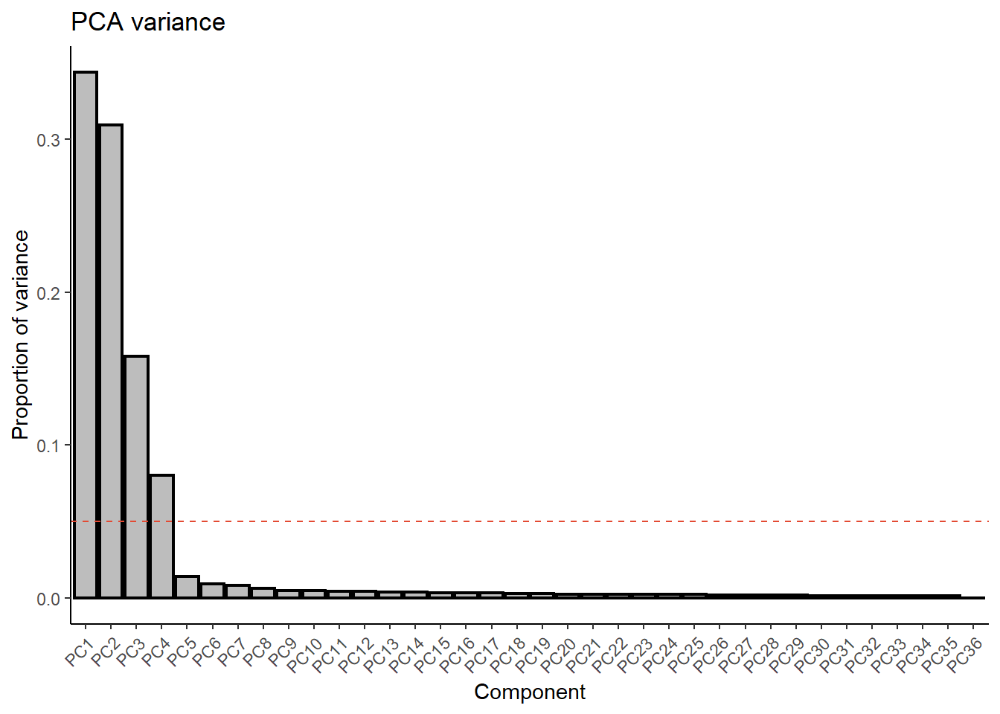
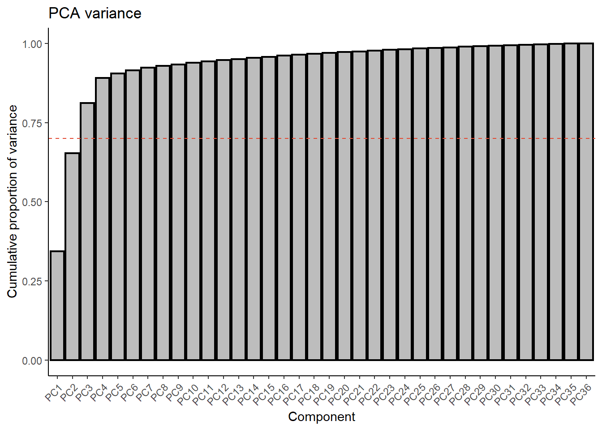
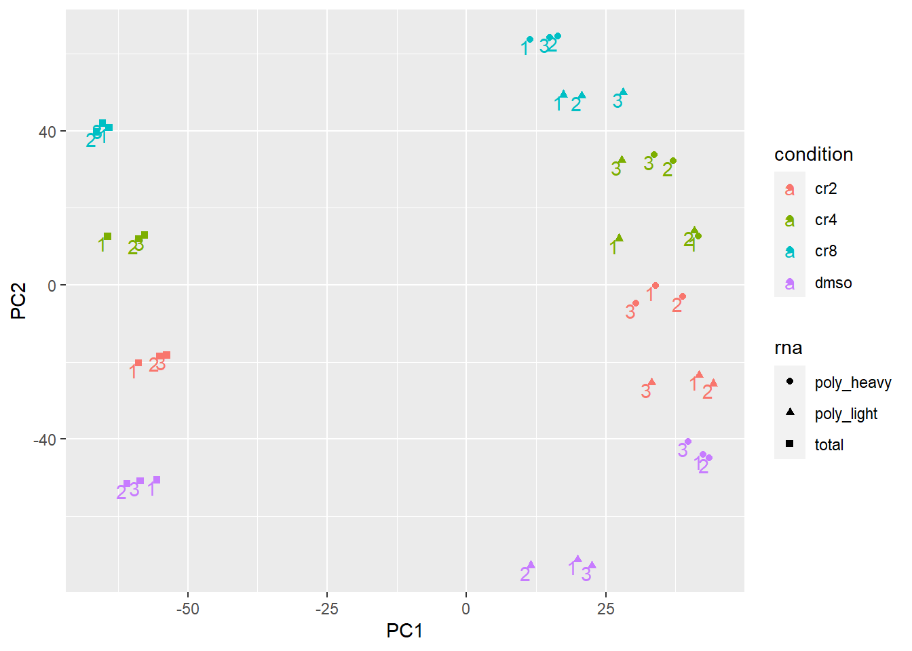
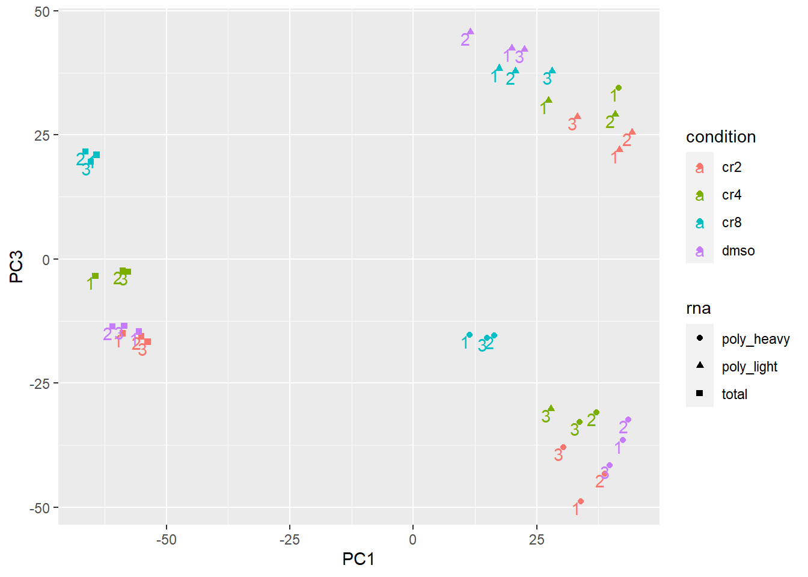
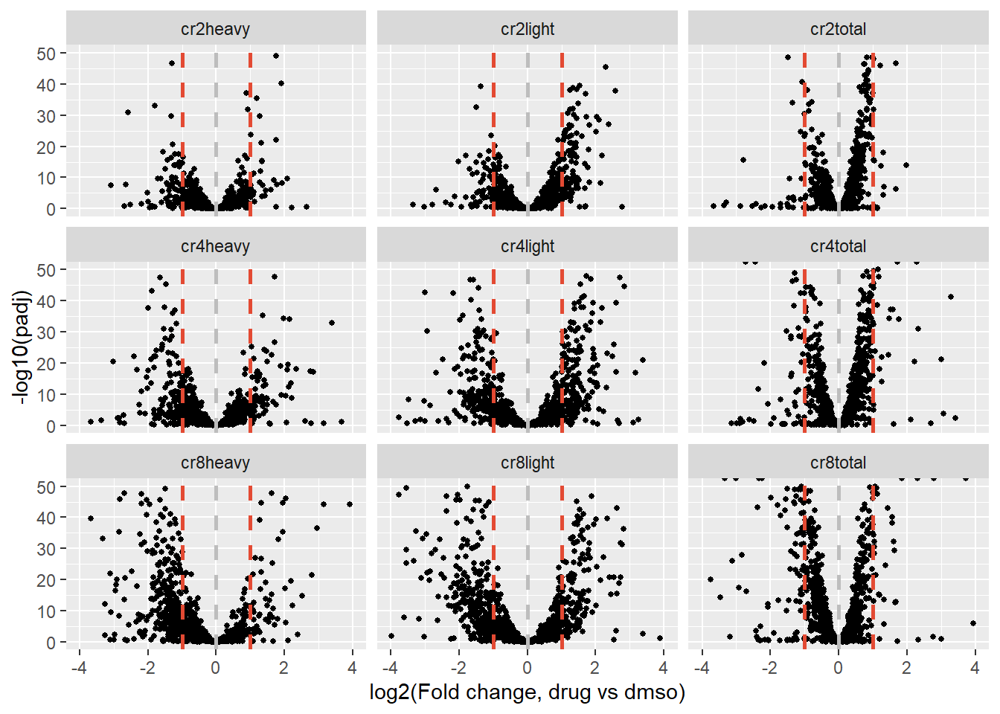
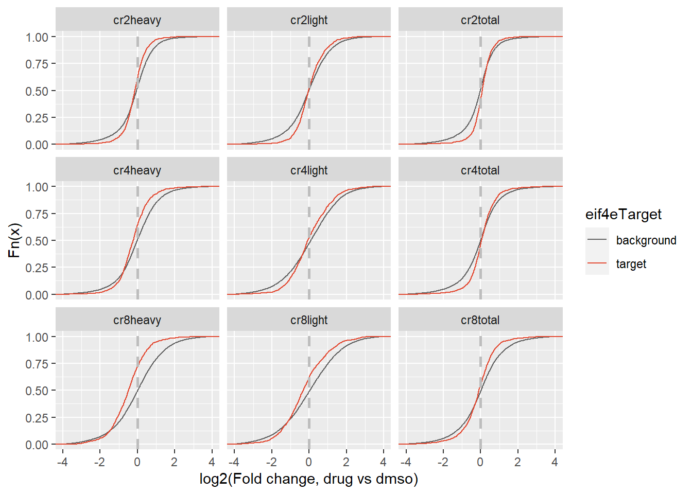
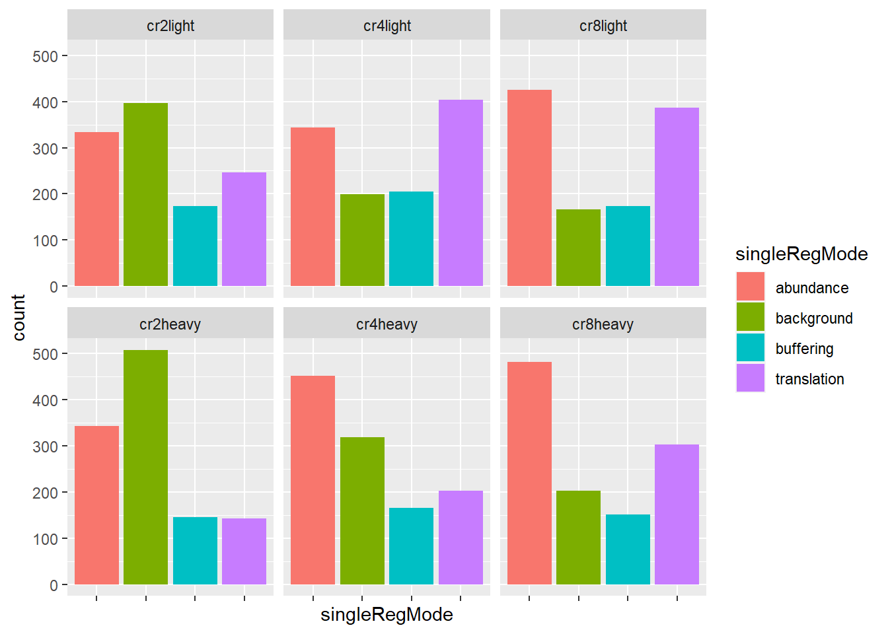

##########################################################################################
library('tidyverse')
library('limma')
library('edgeR')
library('gridExtra')
library('RColorBrewer')
library('ggplot2')
library('ggrepel')Translation Data Exploration
This document details the analysis of processed RNAseq data from osteosarcoma cells treated with different concentrations of the drug CR-1-31b. The purpose of this work is to explore the processed data to see if we can identify interesting trends.
Setting up the environment
These are packages you will need for this notebook. For exact versions used, please refer to the session info at the bottom of this notebook.
I want to set a base directory that we can use as a link to the directory where we will do most of the work. I use two directories here because the Workspace is what is pushed to GitHub and contains scripts and plot files, but the Repository is where more of the big data is stored that does not get pushed.
##########################################################################################
generalDatasets = 'C:/Users/chughes/Documents/bccrc/projectsRepository/generalDatasets'
baseWorkspace = 'C:/Users/chughes/Documents/bccrc/projectsWorkspace/sorensenLab/relatedToOthers'
baseRepository = 'C:/Users/chughes/Documents/bccrc/projectsRepository/sorensenLab/relatedToOthers'Preparing the data
The first thing I will do is to collapse the two analyses (DESeq2 - conventional differential expression analysis, anota2Seq - translatome specific expression analysis) into single data objects that will just make manipulation of them downstream easier. The code below does this process for each.
##########################################################################################
##build an annotation data frame with the information we need
sampleInfo = tibble('sampleName' = rep(c('cr2','cr4','cr8'), 3),
'rnaType' = rep(c('total','light','heavy'), each = 3))
sampleInfo$filePath = file.path(baseRepository,
'sequencing20220530_mikePolysomesCr131bOnly/deseq2',
paste('dataset_deseq2_',sampleInfo$rnaType,'_',sampleInfo$sampleName,'-dmso.rds',sep=''))
##now read the files into an object
sampleFiles = sampleInfo$filePath
allData = tibble()
for (i in 1:length(sampleFiles)){
sampleName = paste(sampleInfo$sampleName[i], sampleInfo$rnaType[i], sep = '')
tempData = tibble(readRDS(sampleFiles[i])) %>%
dplyr::select(symbol, log2FoldChange, padj) %>%
dplyr::filter(!is.na(symbol)) %>%
dplyr::mutate(dataset = sampleName)
#
allData = rbind(allData, tempData)
}
##save this combined set
saveRDS(allData,
paste(baseRepository, '/sequencing20220530_mikePolysomesCr131bOnly/deseq2/dataset_allDeseqDataCombined.rds', sep = ''))
##build a new annotation data frame with the info for the anota2seq analyses
sampleInfo = tibble('sampleName' = rep(c('cr2','cr4','cr8'), 2),
'rnaType' = rep(c('light','heavy'), each = 3))
sampleInfo$filePath = file.path(baseRepository,
'sequencing20220530_mikePolysomesCr131bOnly/anota2seq',
sampleInfo$rnaType,
paste('dataset_anota2seq_',sampleInfo$rnaType,'_dmso-',sampleInfo$sampleName,'.tsv',sep=''))
##now read the files into an object
sampleFiles = sampleInfo$filePath
allData = tibble()
for (i in 1:length(sampleFiles)){
sampleName = paste(sampleInfo$sampleName[i], sampleInfo$rnaType[i], sep = '')
tempData = tibble(read_tsv(sampleFiles[i], show_col_types = FALSE)) %>%
dplyr::select(symbol, identifier, translatedmRNA.apvEff:singleRegMode) %>%
dplyr::filter(!is.na(symbol)) %>%
dplyr::rename(ensg = identifier) %>%
dplyr::mutate(dataset = sampleName)
#
allData = rbind(allData, tempData)
}
##save this combined set
saveRDS(allData,
paste(baseRepository, '/sequencing20220530_mikePolysomesCr131bOnly/anota2seq/dataset_allAnota2seqDataCombined.rds', sep = ''))General differential expression
In order to just look at global changes between the conditions, I will use the two datasets to just make broad comparisons between the datasets and see what we see. I will start with a PCA analysis to ensure the samples are appearing as they should in terms of treatments and replicates. For this I use a raw RNA counts dataset that was prepared in another script, rather than the deseq or anota2seq output.
##########################################################################################
##read the rna count data prepared previously
rnaCounts = readRDS(paste(baseRepository, '/sequencing20220530_mikePolysomesCr131bOnly/quants/dataset_allSamplesRawCounts.rds',sep=''))
##make the matrix for PCA analysis
tmpPca = as.matrix(rnaCounts)
##prepare the annotation matrix
anot = data.frame('sample' = colnames(rnaCounts),
'rna' = rep(c('total','poly_light','poly_heavy'), each = 12),
'condition' = rep(rep(c('dmso','cr2','cr4','cr8'), each = 3), 3),
'replicate' = rep(seq(1,3,1),12))
rownames(anot) = anot$sample
##remove mRNAs with a 0 in at least 1 sample
tmpPcaNoZero = tmpPca[!apply(tmpPca, 1, FUN = function(x) any(x == 0)),]
##normalize and transform the data
tmpPcaNorm = voom(calcNormFactors(DGEList(tmpPcaNoZero)))$E
##calculate the standard deviations and remove mRNAs with an SD in the first 3 quartiles
tmpSd = apply(tmpPcaNorm, 1, sd)
sdQuantiles = quantile(tmpSd)
tmpPcaSdFilt = tmpPcaNorm[tmpSd > sdQuantiles[4], ]
##transpose the data and perform the PCA analysis
tmpPcaTrans = t(tmpPcaSdFilt)
pcaOut = prcomp(tmpPcaTrans)
##generate a barplot of the proportion of variance
pcaVarPlot = summary(pcaOut)$importance[2,]
pcaVarPlotTib = tibble('pc' = factor(names(pcaVarPlot), levels = names(pcaVarPlot)),
'var' = pcaVarPlot)
ggplot(pcaVarPlotTib, aes(pc, var)) +
geom_bar(stat = 'identity', fill = brewer.pal(3,'Greys')[2], color = 'black', size = 0.8) +
geom_hline(yintercept = 0.05, linetype = 'dashed', color = brewer.pal(3,'OrRd')[3]) +
labs(x = 'Component', y = 'Proportion of variance', title = 'PCA variance') +
theme_classic() +
theme(axis.text.x = element_text(angle = 45, hjust = 1))
##generate a barplot of the cumulative proportion of variance
pcaVarPlot = summary(pcaOut)$importance[3,]
pcaVarPlotTib = tibble('pc' = factor(names(pcaVarPlot), levels = names(pcaVarPlot)),
'var' = pcaVarPlot)
ggplot(pcaVarPlotTib, aes(pc, var)) +
geom_bar(stat = 'identity', fill = brewer.pal(3,'Greys')[2], color = 'black', size = 0.8) +
geom_hline(yintercept = 0.7, linetype = 'dashed', color = brewer.pal(3,'OrRd')[3]) +
labs(x = 'Component', y = 'Cumulative proportion of variance', title = 'PCA variance') +
theme_classic() +
theme(axis.text.x = element_text(angle = 45, hjust = 1))
##merge the PCA output with the annotation file and plot the result
pcaPlot = merge(pcaOut$x, anot, by = 'row.names')
ggplot(pcaPlot, aes(x = PC1, y = PC2, shape = rna, col = condition)) +
geom_point() +
geom_text(aes(label = replicate, vjust = 1, hjust = 1))
ggplot(pcaPlot, aes(x = PC1, y = PC3, shape = rna, col = condition)) +
geom_point() +
geom_text(aes(label = replicate, vjust = 1, hjust = 1))
So the data seems to primarily split into three sources of variation. PC1 appears to be split based on the rna type, in this case total RNA or polysome-derived RNA. This is expected. Next, PC2 appears to be variation derived from the drug treatment, with dmso and cr8 being the farthest apart. This is also expected, and nice to see. PC3 is a bit more confusing, but it appears to also be the RNA source, splitting up the two polysome types, light and heavy. In general, these data all look as expected and cluster as I would anticipate based on the experimental design.
Now I will look at differential expression to compare what changes we see between the drug treatments at different levels, irrespective of considerations of specific transcription or translation mechanisms. For this I can use the expression data prepared above.
##########################################################################################EIF4E targets
I want to look at a set of EIF4E targets determined in a previous study, PMID: 17638893. First I will use the deseq2 data to look at changes in all of the conditions, specifically for the target genes.
##########################################################################################
##read their set of regulated targets
eif4 = read_tsv(paste(baseRepository, '/sequencing20220530_mikePolysomesCr131bOnly/publishedEif4ePolysomeDatasetPmid17638893/00085472can070752-sup-supplement_table02.txt', sep = ''), skip = 1) %>%
dplyr::rename(symbol = `Gene symbol`,
foldChange = `Fold Change`) %>%
dplyr::select(symbol, foldChange) %>%
dplyr::group_by(symbol) %>%
dplyr::summarise(meanFoldChange = log2(mean(foldChange, na.rm = TRUE))) %>%
dplyr::filter(meanFoldChange > 0.5) %>%
dplyr::filter(!is.na(symbol))Rows: 3085 Columns: 7
-- Column specification --------------------------------------------------------
Delimiter: "\t"
chr (3): Refseq, Gene symbol, Gene name
dbl (4): Geneid, Fold Change, q-value (%), Negative Fold Change
i Use `spec()` to retrieve the full column specification for this data.
i Specify the column types or set `show_col_types = FALSE` to quiet this message.eif4Genes = eif4$symbol
##remember their data is an induction model, so these are things that increase in the presence of 4E, which theoretically should be the opposite of CR1.
##read in our own data
rnaExp = readRDS(paste(baseRepository, '/sequencing20220530_mikePolysomesCr131bOnly/deseq2/dataset_allDeseqDataCombined.rds', sep = '')) %>%
dplyr::mutate(eif4eTarget = ifelse(symbol %in% eif4Genes, 'target', 'background'))
##plot the data as a scatter
ggplot(rnaExp[rnaExp$eif4eTarget == 'target',], aes(log2FoldChange, -log10(padj))) +
geom_point(size = 1) +
scale_y_continuous(limits = c(0,50)) +
scale_x_continuous(limits = c(-4,4)) +
labs(x = 'log2(Fold change, drug vs dmso)') +
geom_vline(xintercept = 0, linetype = 'dashed', color = brewer.pal(3,'Greys')[2], size = 1) +
geom_vline(xintercept = c(-1,1), linetype = 'dashed', color = brewer.pal(3,'OrRd')[3], size = 1) +
facet_wrap(~dataset)Warning: Removed 515 rows containing missing values (geom_point).
##plot the data as an ecdf
p = ggplot(rnaExp, aes(log2FoldChange, colour = eif4eTarget)) +
stat_ecdf() +
scale_x_continuous(limits = c(-4,4)) +
scale_color_manual(values = c(brewer.pal(3,'Greys')[3], brewer.pal(3, 'OrRd')[3])) +
geom_vline(xintercept = 0, linetype = 'dashed', color = brewer.pal(3,'Greys')[2], size = 1) +
labs(y = 'Fn(x)', x = 'log2(Fold change, drug vs dmso)') +
facet_wrap(~dataset)
pWarning: Removed 2509 rows containing non-finite values (stat_ecdf).
##if you want to get the actual data for the ecdf function to do a statistical test, use: p.data <- layer_data(p)So, it does seem like EIF4E targets are suppressed in CR1 treatment conditions. In the total RNA samples, it looks like we have an even appearance of the target genes on both sides of 0, meaning that they appear to be mostly equally up and downregulated transcriptionally. In contrast, if you look at the CR8 heavy condition in particular, you can see the distribution is skewed, meaning that more of the 4E targets are downregulated translationally at this high concentration of drug. Although, you do see that in the cr2heavy plot, for example, there are still quite a bit of transcription and translation changes, meaning that CR1 may only hit 4E targets at a high drug concentration. It would be nice to see that anota2seq is assigning these as ‘translation’ targets though, rather than transcription or buffering. We can check this using our anota2seq data.
##########################################################################################
##read in our anota2seq data
##this analysis requires the EIF4E target set, so you will need to get it with the code chunk above if you are just starting here
rnaExp = readRDS(paste(baseRepository, '/sequencing20220530_mikePolysomesCr131bOnly/anota2seq/dataset_allAnota2seqDataCombined.rds', sep = '')) %>%
dplyr::mutate(eif4eTarget = ifelse(symbol %in% eif4Genes, 'target', 'background')) %>%
dplyr::mutate(dataset = factor(dataset, levels = c('cr2light','cr4light','cr8light','cr2heavy','cr4heavy','cr8heavy')))
##check how many of the targets are assigned as translation mediated
ggplot(rnaExp[rnaExp$eif4eTarget == 'target',], aes(x = singleRegMode, fill = singleRegMode)) +
geom_bar(position = position_dodge()) +
facet_wrap(~dataset) +
theme(axis.text.x = element_blank())
So we definitely see an uptick in translation assigned EIF4E targets as the concentration of drug increases, but still many are not assigned as translation targets. It seems to mostly re-classify ‘background’ assignments to as now being translationally regulated. I think there is a big transcriptional response in these cells, possibly due to the fact that this is a 24-hour drug treatment. I think that by the time we are harvesting the cells, they are trying to adapt to the drug and are potentially upregulating the transcription of things that are being suppressed translationally in order to recover the levels. This would somewhat mask our ability to assign them as translation targets. But, nevertheless, I think there is a clear change in EIF4E targets, especially at high drug concentrations.
RNA features
It has been suggested previously (PMID: 31723131) that CR1 treatment may modify the translation of mRNAs based on certain physical properties:
“Factors required for efficient translation of an mRNA are determined in large part by diverse features of its 5′ untranslated region (UTR), including its length, secondary structure, and sequence motifs. Therefore, we next sought to identify RNA features associated with the effects of CR-31 on mRNA translation. Consistent with a recent report examining the 5′- UTRs of eIF4A-dependent mRNAs, we did not observe an enrichment for (GGC) motifs, which are proposed to fold into G-quadruplexes, within the 5’-UTRs of mRNAs whose translation is suppressed by CR-31 (Supplementary Fig. 5a). We also did not observe an enrichment for polypurines in the 5′-UTRs of transcripts that are translationally suppressed in KP organoids after CR-31 treatment (Supplementary Fig. 5b). Instead, we found that transcripts which are negatively regulated by CR-31 treatment have slightly shorter 5′-UTRs (Supplementary Fig. 5c), exhibit an elevated GC content (Supplementary Fig. 5d), and are more structured (after adjustment of fold-energies for 5′-UTR lengths) than non-regulated transcripts (Supplementary Fig. 5e). Thus, the RNA helicase eIF4A supports an oncogenic translation program that is activated in pancreatic cancer cells and characterized by mRNAs with structured 5′-UTRs. Overall, our results indicate that while inhibition of eIF4A by CR-31 exhibits minimal impact on the translatome of N organoids, it effectively reprograms the translatome of KP organoids towards that of N organoids.”
If you look at their own data suggesting this, it is actually an extremely small change between the conditions, despite being significant, so I am not so confident this is a true observation, but I still think we should look at these properties in our own dataset for regulated mRNAs. They focused solely on mRNAs that have a reduction in translation, but I will show the data for all subclasses just in case something pops out. The first thing we need to do is to get the sets of genes we want to look at so that we can pull out their 5’-UTR sequences.
##########################################################################################